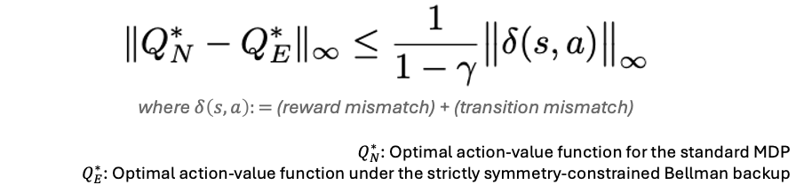

Partially Equivariant Reinforcement Learning in Symmetry-Breaking Environments
Abstract
Group symmetries provide a powerful inductive bias for reinforcement learning (RL), enabling efficient generalization across symmetric states and actions via group-invariant Markov Decision Processes (MDPs). However, real-world environments rarely realize fully group-invariant MDPs; dynamics, actuation limits, and reward design usually break symmetries, often only locally. Under group-invariant Bellman backups for such cases, local symmetry-breaking introduces errors that propagate across the entire state-action space, resulting in global value estimation errors. To address this, we introduce Partially Group-Invariant MDP (PI-MDP), which selectively applies group-invariant or standard Bellman backups depending on where symmetry holds. This framework mitigates error propagation from locally broken symmetries while maintaining the benefits of equivariance, thereby enhancing sample efficiency and generalizability. Building on this framework, we present practical RL algorithms - Partially Equivariant (PE)-DQN for discrete control and PE-SAC for continuous control - that combine the benefits of equivariance with robustness to symmetry-breaking. Experiments across grid world, locomotion, and manipulation benchmarks show that PE-DQN and PE-SAC significantly outperform baselines, highlighting the importance of selective symmetry exploitation for robust and sample-efficient RL.
Problem: Local symmetry-breaking induces global value errors

- Equivariant RL premise. If an MDP is group-invariant (rewards and transitions invariant under $g$), then the optimal value satisfies $V^*(g \cdot s) = V^*(s)$, and there exists an optimal policy that is equivariant.
- Symmetry-breaking in practice. In real-world settings, the environment is not group-invariant due to diverse factors (e.g., obstacles, joint limits, reward shaping).
- Practical impact. Under such mismatch, enforcing strict equivariance can produce errors, even beyond the local breaking region.
Mismatch in reward/transition amplifies over horizon

- Local mismatch enters the backup. When the MDP violates group symmetry, the symmetry-aware Bellman backup differs from the standard Bellman operator due to reward/transition mismatch.
- Why errors spread. Because Bellman backups propagate information through multi-step transitions, local mismatch can accumulate over the planning horizon, producing global value estimation error. The bound formalizes this amplification via $\frac{1}{1-\gamma}$.
Solution: Partially Group-Invariant MDP (PI-MDP)

- PI-MDP. We introduce PI-MDP, which uses a state-action gate $\lambda(s,a)$ to apply equivariant backups where symmetry is valid and switch to the standard model where symmetry-breaking occurs.
- Partially Equivariant RL. Building on PI-MDP, we derive two practical deep RL algorithms: PE-DQN and PE-SAC, which preserve equivariant inductive bias where symmetry is valid while falling back to the standard backup in symmetry-breaking regions.
- Learning the gate. We train $\lambda(s,a)$ as an auxiliary task from the disagreement between two reward/transition predictors: one based on the group-invariant model $\mathcal{M}_E$ and the other based on the unconstrained model $\mathcal{M}_N$. Larger disagreement indicates local symmetry-breaking and encourages switching to $\mathcal{M}_N$.
PI-MDP recovers the true optimum under correct gating

- PI-MDP alleviates equivariance error through selective gating. If $\lambda(s,a)=1$ on all symmetry-breaking state-action pairs, PI-MDP theoretically mitigates the error bound to zero.
Continuous control results

- We evaluate PE-SAC on continuous-control tasks. PE-SAC achieves strong sample efficiency across tasks and remains robust under symmetry-breaking.
Learned gate visualization
The videos below demonstrate how the learned gate responds to local symmetry-breaking. The background color and the moving circle indicate the predicted gate probability $\Pr(\lambda=1 \mid s,a)$. Green ($\lambda \approx 0$) indicates the equivariant approximation is reliable, while Red ($\lambda \approx 1$) indicates local symmetry-breaking, triggering a switch to the standard model.
UR5e Reach
Task: The robot arm aligns its end-effector with a target SE(3) pose, exhibiting an approximate SO(3) symmetry around the workspace center.
What to look for: Notice how the gate increases (turns red) near configurations where joint limits and kinematic singularities locally violate this assumed symmetry.
MuJoCo Ant
Task: Moving forward safely. The leg configuration exhibits an approximate 90° rotational symmetry.
What to look for: The gate increases (turns red) when contact-driven dynamics, friction, or joint limits make the equivariant approximation unreliable.
Citation
@inproceedings{
chang2026partially,
title={Partially Equivariant Reinforcement Learning in Symmetry-Breaking Environments},
author={Junwoo Chang and Minwoo Park and Joohwan Seo and Roberto Horowitz and Jongmin Lee and Jongeun Choi},
booktitle={International Conference on Learning Representations},
year={2026},
url={https://openreview.net/forum?id=dRDcVyobhH}
}